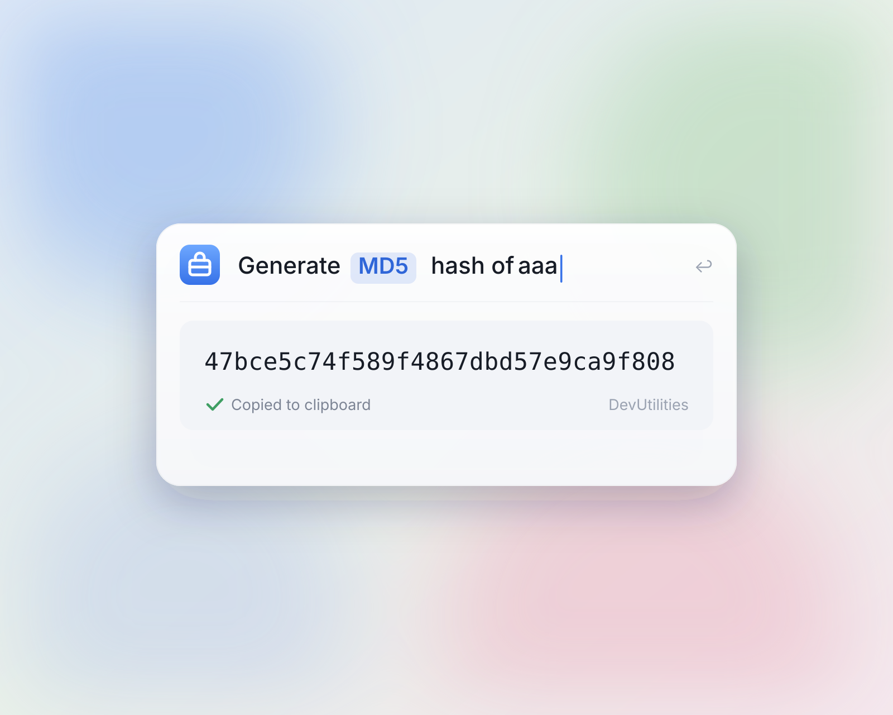

Twenty-five
developer tools,
one quiet macOS app.
The small, daily things — formatting, decoding, comparing, generating — gathered into a single native window. No tabs, no spinners, no telemetry. And now in Spotlight: press ⌘Space, type the conversion, read the result inline — it's on your clipboard before the app even opens.
Every tool, listed plainly.
Search the whole shelf, or browse by trade.
Your tools, now in Spotlight.
v2.15 — 11 commands run inline, no app window needed.

⌘Space is the whole workflow
Convert a timestamp, hash a string, generate a UUID — type the command, fill parameters inline, read the result in place. The app never opens.
Result on your clipboard
Every command copies its output automatically. Run it, ⌘V it, done — no selecting, no extra keystroke.
Eleven commands, nine tools
Timestamp, number base, units, Base64, URL, JWT, hashes, UUIDs, random strings — the quick-hit conversions you reach for daily.
Shortcuts & Siri for free
Built on App Intents, so every command is automatable in Shortcuts and callable through Siri — quick keys included on macOS 26.
What developers say
when the App Store stops listening.
The JSON diff has saved me from at least a dozen late-night API pages. It feels like the tool the Mac always wanted.
Crypto, JWT, base64 — the things you reach for at 2am, all in one place. Native enough that I forget it isn't built in.
The timestamp converter and UUID generator are part of my muscle memory. I'd pay for the AI translate alone.
HTTP client with streaming, JSON tree, history. It is what every team's scratch app should grow up to be.
Parquet viewer is the unsung hero. Schema, rows, export — the entire debugging loop without leaving the dock.
Regex tester with live capture groups; QR codes from clipboard. Tiny tools, but the polish is the point.
Released, in the open.
Recent versions, in the order they shipped.
-
2.15
Shorter names, one shared vocabulary
Tool labels are now concise and consistent across the app and website — Base64, JWT, JSON, UUID, Crypto, Parquet, and the rest.
July 2026 -
2.14
Data Converter
Convert between JSON, YAML, TOML, and CSV in any direction. Object key order is preserved, nested data flattens to dotted CSV columns, and CSV cells can be type-inferred or kept as strings.
June 2026 -
2.13
Struct Converter
Drop in JSON, TOML, YAML, or SQL DDL. Get back a typed struct or interface in TypeScript, Python, Go, Java, Rust, Swift, or PHP — fields, tags, and nested types included.
May 2026 -
2.12
AI Chat, redrawn
Markdown rendering with syntax-highlighted code blocks. One-click copy on every fence. OpenAI Responses API and DeepSeek reasoning. AI Translate adds OpenAI TTS — 13 voices, real-time streaming.
May 2026 -
2.11
Diff, everywhere it makes sense
Text Compare arrives as a dedicated tool. JSON, SQL, and HTML each pick up a side-by-side diff mode. Powered by CodeMirror.
Apr 2026 -
2.10
Currency, with memory
38 fiat currencies. 24-hour smart caching. 30-day price history with quiet trend arrows.
Mar 2026 -
2.9
Random String
Five presets — passwords, API keys, tokens, IDs, slugs — backed by SecRandomCopyBytes.
Feb 2026
Twenty-five tools.
One small Mac app.
Native, offline-capable, $29.99 on the Mac App Store. Ships with feature management, drag-and-drop sidebar organization, and full keyboard navigation. No account, no subscription.